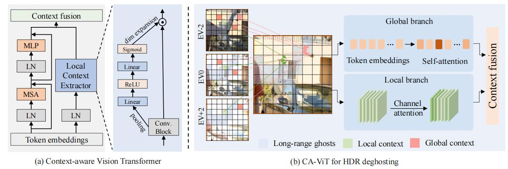

HDR-Transformer¶
综述¶
会议时间：European Conference on Computer Vision 2022(ECCV, 2022)
论文地址：https://arxiv.org/pdf/2208.05114v1.pdf
源码地址：https://github.com/liuzhen03/HDR-Transformer-PyTorch
针对领域：HDR成像
主要思想¶
多帧高动态范围成像（High Dynamic Range Imaging, HDRI/HDR）旨在通过合并多幅不同曝光程度下的低动态范围图像，生成具有更宽动态范围和更逼真细节的图像。如果这些低动态范围图像完全对齐，则可以很好地融合为HDR图像，但是，实际拍摄到的图像容易受到相机、物体运动的干扰，三张低动态范围图像往往不能很好地得到对齐，直接对三图像做融合的话，所生成的图像容易产生伪影、重影，例如下图所示：
为了解决这一现象，传统的算法通常分为两类：在图像融合前对齐（align）图像或者拒绝（reject）不对齐的像素来去除重影，但精确地对齐图像或者精确地定位不对齐的像素往往难以实现，所生成的HDR图像效果并不好，因此现在常常以数据驱动的方法来训练CNN，利用CNN来实现图像的融合。
基于CNN的去重影方法主要分为两类：①利用单应性或光流法对LDR图像进行预对齐；②设计端到端的隐式对齐模块或者新颖的学习策略来处理重影。但是由于卷积局部性的限制，模型难以建立远程依赖（需要堆叠较深的卷积层来实现提高感受野的目的），如果图中物体的运动范围过大，则先前基于CNN的方法仍容易产生重影；同时由于在整幅图像中共享卷积核，因此卷积是内容无关的运算（content-independment），这一特性导致卷积运算忽略了不同图像区域的长距离强度变化，也就是卷积运算会平等地对待图像中的所有数据。（引入注意力机制可以解决这一问题）
对于模型的长距离建模能力，一个很好地策略就是利用transformer结构，例如ViT算法。然而，本文作者发现transformer结构并不能直接应用于HDR任务中，主要有两个原因：①transformer缺乏CNN中归纳偏差的能力（inductive biases），因此在数据量不足的情况下训练时泛化能力较差，模型性能不高；②帧内和帧间相邻像素之间的关系也对恢复图像的局部细节至关重要，而纯transformer结构难以提取局部上下文之前的关系。
注：在HDR任务中收集大量真实标记的样本成本过高，因此数据集往往有限。
对此，本文作者提出了一种上下文感知的ViT（Context-Aware Vision Transformer, CA-ViT），通过双分支架构来同时捕获全局和局部的依赖关系，也就是同时实现全局和局部的建模。对于全局分支，作者使用基于窗口的多头transformer编码器来捕远程上下文关系（即Swin transformer）；对于局部分支，作者设计了局部上下文提取器（local context extractor, LCE），通过卷积块来提取局部特征映射，并且通过通道注意力机制在多个帧特征之间选择有用的特征，抑制无用的特征，因此，CA-ViT结构可以使全局和局部以互补的方式发挥作用。基于CA-ViT结构，作者提出了用于HDR成像的transformer结构（HDR-Transformer）。
对于HDR-Transformer，主要包括两个模块：特征提取网络和HDR恢复网络，特征提取网络利用卷积运算和空间注意力模块来提取浅层特征，并且进行粗融合，有助于稳定transformer的训练和抑制图像中不对齐的像素。HDR重建模块以CA-ViT为基本组件，从全局和局部两个角度对图像建模，有助于重建高质量的HDR图像，同时无需堆叠非常深的卷积块。
方法¶
CA-ViT¶
具体结构如下图所示，主要包括一个全局Swin transformer编码器分支和一个局部LCE分支：

其中LCE分支就是一层标准化层加上通道注意力机制，对于两个分支输出的特征，作者采用元素加法来合并上下文，减少附加参数的影响。
网络结构¶
网络结构如下图所示，总体包括特征提取网络（a）和HDR恢复网络（b）：
为了更好地利用输入数据，首先依次利用伽马校正，将三张LDR图像I_i映射到HDR域，生成伽马校正图像\hat I_i：
特征提取网络
将曝光度为“中”的图像视为“参考图像”（reference feature），首先将三组图像数据依次经过卷积层，得到浅层特征f_i，之后将参考图像的特征f_2依次与其他非参考图像特征f_1与f_3合并，用于计算空间注意力图m_i：
HDR恢复网络
该网络主要由多个上下文感知Transformer模块构成（Context-Aware Transformer Blocks, CTB），每个模块由多个CA-ViT、空洞卷积层（dilated convolution layer）以及一个残差连接组成，其中空洞卷积用于提高上下文范围的感受野，残差连接用于稳定模型的优化过程。
注：
-
输入特征由f_1',f_2,f_3'合并构成，经过一层卷积层压缩通道数。
-
早期的卷积层有助于稳定ViT的训练过程（即在ViT结构前面引入卷积层）：The early convolution layers help to stabilize the training process of Vision Transformers（Xiao, T., Singh, M., Mintun, E., Darrell, T., Doll´ar, P., Girshick, R.: Early convolutions help transformers see better. arXiv preprint arXiv:2106.14881 (2021)）
损失函数¶
由于HDR图像通常是在色调映射后查看的，因此在这里使用\mu-law函数计算色调映射域中的损失：
实验¶
数据集：Kalantari
训练阶段：随机裁剪128*128的图片来做训练；
测试阶段：对于每张图片，先以网格的形式拆分成256*256的patch，然后遍历所有的patch来做测试，对于一张图的所有patch取均值，得到每张图的指标数据；
精度对比¶
总结¶
在本文中，作者提出了一种双分支上下文感知Transformer，通过加入局部特征提取器（即引入卷积操作）来克服传统ViT在局部建模上的不足，扩展了标准的ViT模块，可以实现全局和局部上下文的同时建模。此外，基于所设计的CA-ViT模块，作者提出了用于HDR成像的HDR-Transformer网络，通过结合Transformer和CNN的优点，来有效地缓解HDR成像过程中容易产生重影的问题。
附：源码¶
CA-ViT
import torch
from torch import nn
from timm.models.layers import DropPath, to_2tuple, trunc_normal_
class Mlp(nn.Module):
def __init__(self, in_features, hidden_features=None, out_features=None, act_layer=nn.GELU, drop=0.):
super().__init__()
out_features = out_features or in_features
hidden_features = hidden_features or in_features
self.fc1 = nn.Linear(in_features, hidden_features)
self.act = act_layer()
self.fc2 = nn.Linear(hidden_features, out_features)
self.drop = nn.Dropout(drop)
def forward(self, x):
x = self.fc1(x)
x = self.act(x)
x = self.drop(x)
x = self.fc2(x)
x = self.drop(x)
return x
def window_partition(x, window_size):
B, H, W, C = x.shape
x = x.view(B, H // window_size, window_size, W // window_size, window_size, C)
windows = x.permute(0, 1, 3, 2, 4, 5).contiguous().view(-1, window_size, window_size, C)
return windows
def window_reverse(windows, window_size, H, W):
B = int(windows.shape[0] / (H * W / window_size / window_size))
x = windows.view(B, H // window_size, W // window_size, window_size, window_size, -1)
x = x.permute(0, 1, 3, 2, 4, 5).contiguous().view(B, H, W, -1)
return x
class WindowAttention(nn.Module):
def __init__(self, dim, window_size, num_heads, qkv_bias=True, qk_scale=None, attn_drop=0., proj_drop=0.):
super().__init__()
self.dim = dim
self.window_size = window_size # Wh, Ww
self.num_heads = num_heads
head_dim = dim // num_heads
self.scale = qk_scale or head_dim ** -0.5
# define a parameter table of relative position bias
self.relative_position_bias_table = nn.Parameter(
torch.zeros((2 * window_size[0] - 1) * (2 * window_size[1] - 1), num_heads)) # 2*Wh-1 * 2*Ww-1, nH
# get pair-wise relative position index for each token inside the window
coords_h = torch.arange(self.window_size[0])
coords_w = torch.arange(self.window_size[1])
coords = torch.stack(torch.meshgrid([coords_h, coords_w])) # 2, Wh, Ww
coords_flatten = torch.flatten(coords, 1) # 2, Wh*Ww
relative_coords = coords_flatten[:, :, None] - coords_flatten[:, None, :] # 2, Wh*Ww, Wh*Ww
relative_coords = relative_coords.permute(1, 2, 0).contiguous() # Wh*Ww, Wh*Ww, 2
relative_coords[:, :, 0] += self.window_size[0] - 1 # shift to start from 0
relative_coords[:, :, 1] += self.window_size[1] - 1
relative_coords[:, :, 0] *= 2 * self.window_size[1] - 1
relative_position_index = relative_coords.sum(-1) # Wh*Ww, Wh*Ww
self.register_buffer("relative_position_index", relative_position_index)
self.qkv = nn.Linear(dim, dim * 3, bias=qkv_bias)
self.attn_drop = nn.Dropout(attn_drop)
self.proj = nn.Linear(dim, dim)
self.proj_drop = nn.Dropout(proj_drop)
trunc_normal_(self.relative_position_bias_table, std=.02)
self.softmax = nn.Softmax(dim=-1)
def forward(self, x, mask=None):
B_, N, C = x.shape
qkv = self.qkv(x).reshape(B_, N, 3, self.num_heads, C // self.num_heads).permute(2, 0, 3, 1, 4)
q, k, v = qkv[0], qkv[1], qkv[2]
q = q * self.scale
attn = (q @ k.transpose(-2, -1))
relative_position_bias = self.relative_position_bias_table[self.relative_position_index.view(-1)].view(
self.window_size[0] * self.window_size[1], self.window_size[0] * self.window_size[1], -1) # Wh*Ww,Wh*Ww,nH
relative_position_bias = relative_position_bias.permute(2, 0, 1).contiguous() # nH, Wh*Ww, Wh*Ww
attn = attn + relative_position_bias.unsqueeze(0)
if mask is not None:
nW = mask.shape[0]
attn = attn.view(B_ // nW, nW, self.num_heads, N, N) + mask.unsqueeze(1).unsqueeze(0)
attn = attn.view(-1, self.num_heads, N, N)
attn = self.softmax(attn)
else:
attn = self.softmax(attn)
attn = self.attn_drop(attn)
x = (attn @ v).transpose(1, 2).reshape(B_, N, C)
x = self.proj(x)
x = self.proj_drop(x)
return x
def extra_repr(self) -> str:
return f'dim={self.dim}, window_size={self.window_size}, num_heads={self.num_heads}'
def flops(self, N):
# calculate flops for 1 window with token length of N
flops = 0
# qkv = self.qkv(x)
flops += N * self.dim * 3 * self.dim
# attn = (q @ k.transpose(-2, -1))
flops += self.num_heads * N * (self.dim // self.num_heads) * N
# x = (attn @ v)
flops += self.num_heads * N * N * (self.dim // self.num_heads)
# x = self.proj(x)
flops += N * self.dim * self.dim
return flops
class LocalContextExtractor(nn.Module):
def __init__(self, dim, reduction=8):
super().__init__()
self.conv = nn.Sequential(
nn.Conv2d(dim, dim // reduction, kernel_size=1, padding=0, bias=True),
nn.Conv2d(dim // reduction, dim // reduction, kernel_size=3, padding=1, bias=True),
nn.Conv2d(dim // reduction, dim, kernel_size=1, padding=0, bias=True),
nn.LeakyReLU(negative_slope=0.2, inplace=True),
)
self.avg_pool = nn.AdaptiveAvgPool2d(1)
self.fc = nn.Sequential(
nn.Linear(dim, dim // reduction, bias=False),
nn.ReLU(),
nn.Linear(dim // reduction, dim, bias=False),
nn.Sigmoid()
)
def forward(self, x):
x = self.conv(x)
B, C, _, _ = x.size()
y = self.avg_pool(x).view(B, C)
y = self.fc(y).view(B, C, 1, 1)
return x * y.expand_as(x)
class ContextAwareTransformer(nn.Module):
def __init__(self, dim, input_resolution, num_heads, window_size=8, shift_size=0,
mlp_ratio=4., qkv_bias=True, qk_scale=None, drop=0., attn_drop=0., drop_path=0.,
act_layer=nn.GELU, norm_layer=nn.LayerNorm):
super().__init__()
self.dim = dim
self.input_resolution = input_resolution
self.num_heads = num_heads
self.window_size = window_size
self.shift_size = shift_size
self.mlp_ratio = mlp_ratio
if min(self.input_resolution) <= self.window_size:
# if window size is larger than input resolution, we don't partition windows
self.shift_size = 0
self.window_size = min(self.input_resolution)
assert 0 <= self.shift_size < self.window_size, "shift_size must in 0-window_size"
self.norm1 = norm_layer(dim)
self.attn = WindowAttention(
dim, window_size=to_2tuple(self.window_size), num_heads=num_heads,
qkv_bias=qkv_bias, qk_scale=qk_scale, attn_drop=attn_drop, proj_drop=drop)
self.drop_path = DropPath(drop_path) if drop_path > 0. else nn.Identity()
self.norm2 = norm_layer(dim)
mlp_hidden_dim = int(dim * mlp_ratio)
self.mlp = Mlp(in_features=dim, hidden_features=mlp_hidden_dim, act_layer=act_layer, drop=drop)
if self.shift_size > 0:
attn_mask = self.calculate_mask(self.input_resolution)
else:
attn_mask = None
self.register_buffer("attn_mask", attn_mask)
self.lce = LocalContextExtractor(self.dim)
def calculate_mask(self, x_size):
# calculate attention mask for SW-MSA
H, W = x_size
img_mask = torch.zeros((1, H, W, 1)) # 1 H W 1
h_slices = (slice(0, -self.window_size),
slice(-self.window_size, -self.shift_size),
slice(-self.shift_size, None))
w_slices = (slice(0, -self.window_size),
slice(-self.window_size, -self.shift_size),
slice(-self.shift_size, None))
cnt = 0
for h in h_slices:
for w in w_slices:
img_mask[:, h, w, :] = cnt
cnt += 1
mask_windows = window_partition(img_mask, self.window_size) # nW, window_size, window_size, 1
mask_windows = mask_windows.view(-1, self.window_size * self.window_size)
attn_mask = mask_windows.unsqueeze(1) - mask_windows.unsqueeze(2)
attn_mask = attn_mask.masked_fill(attn_mask != 0, float(-100.0)).masked_fill(attn_mask == 0, float(0.0))
return attn_mask
def forward(self, x, x_size):
H, W = x_size
B, L, C = x.shape
# assert L == H * W, "input feature has wrong size"
shortcut = x
x = self.norm1(x)
x = x.view(B, H, W, C)
# local context features
lcf = x.permute(0, 3, 1, 2)
# cyclic shift
if self.shift_size > 0:
shifted_x = torch.roll(x, shifts=(-self.shift_size, -self.shift_size), dims=(1, 2))
else:
shifted_x = x
# partition windows
x_windows = window_partition(shifted_x, self.window_size) # nW*B, window_size, window_size, C
x_windows = x_windows.view(-1, self.window_size * self.window_size, C) # nW*B, window_size*window_size, C
# W-MSA/SW-MSA (to be compatible for testing on images whose shapes are the multiple of window size
if self.input_resolution == x_size:
attn_windows = self.attn(x_windows, mask=self.attn_mask) # nW*B, window_size*window_size, C
else:
attn_windows = self.attn(x_windows, mask=self.calculate_mask(x_size).to(x.device))
# merge windows
attn_windows = attn_windows.view(-1, self.window_size, self.window_size, C)
shifted_x = window_reverse(attn_windows, self.window_size, H, W) # B H' W' C
# reverse cyclic shift
if self.shift_size > 0:
x = torch.roll(shifted_x, shifts=(self.shift_size, self.shift_size), dims=(1, 2))
else:
x = shifted_x
x = x.view(B, H * W, C)
# FFN
x = shortcut + self.drop_path(x)
x = x + self.drop_path(self.mlp(self.norm2(x)))
# local context
lc = self.lce(lcf)
lc = lc.view(B, C, H * W).permute(0, 2, 1)
x = lc + x
return x
def extra_repr(self) -> str:
return f"dim={self.dim}, input_resolution={self.input_resolution}, num_heads={self.num_heads}, " \
f"window_size={self.window_size}, shift_size={self.shift_size}, mlp_ratio={self.mlp_ratio}"
def flops(self):
flops = 0
H, W = self.input_resolution
# norm1
flops += self.dim * H * W
# W-MSA/SW-MSA
nW = H * W / self.window_size / self.window_size
flops += nW * self.attn.flops(self.window_size * self.window_size)
# mlp
flops += 2 * H * W * self.dim * self.dim * self.mlp_ratio
# norm2
flops += self.dim * H * W
return flops
以上仅是笔者个人见解，若有问题，欢迎指正
注：初步完稿于2023年7月3日